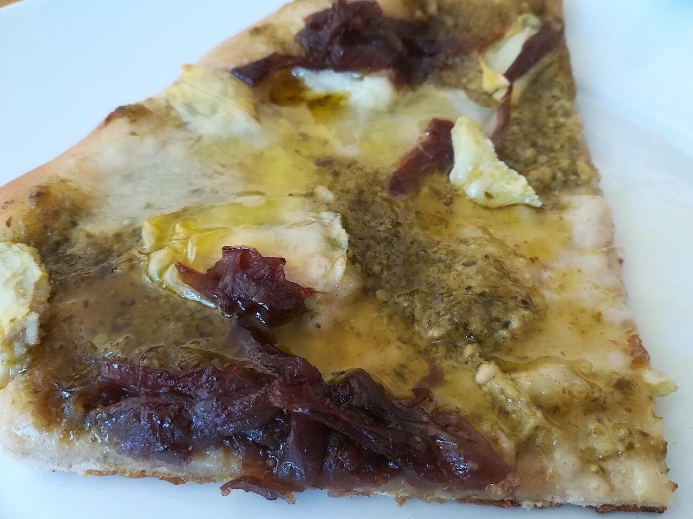
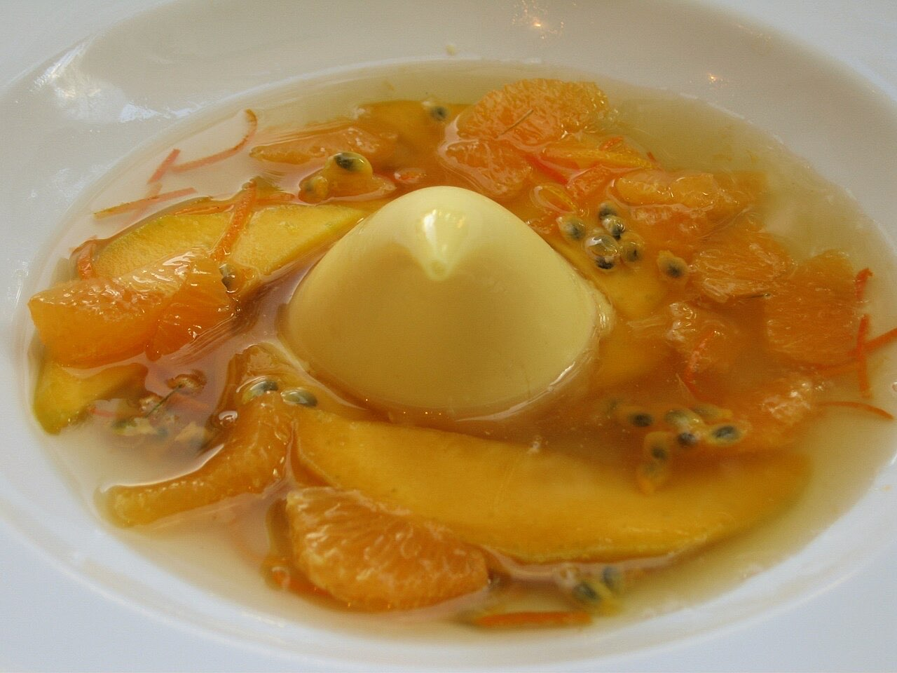

Fotografias ilustrativas — no site final usamos as vossas.
Pizzaria · Pevidém
Pizzas ao jantar, de sexta a domingo
Quatro queijos, quatro estações e El Pesto.
Panna cotta de caramelo e brownie para terminar.
Peça da mesa por QR code e fique a conversar.
O Orfeu é uma pizzaria em Pevidém, na Avenida Sociedade Musical de Pevidém, aberta ao jantar de sexta a domingo. Há pizza quatro queijos, quatro estações e El Pesto, e panna cotta ou brownie para fechar.


Fotografias ilustrativas — no site final usamos as vossas.
Novo · Pedidos por QR code
Menos espera nas horas de ponta, menos enganos nos pedidos e a equipa livre para servir.
Pedido de reserva
Escolha o dia e a hora — o pedido chega por WhatsApp e confirmamos logo.
↑ Assim chegaria a mensagem ao vosso WhatsApp. (Nesta demonstração nada é enviado.)
Onde estamos
| Sex–Sáb | 19:00–23:00 |
|---|---|
| Dom | 19:00–22:30 |
| Seg–Qui | Encerrado |
Proposta para Orfeu Restaurante
Esta página foi feita de propósito para Orfeu Restaurante por João Machado, programador web aqui de Guimarães. Inclui:
Eu trato do alojamento e da manutenção. Sem compromisso.